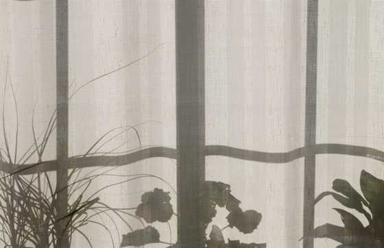
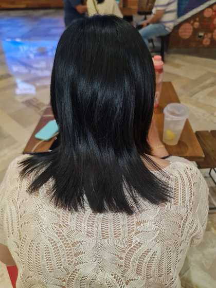
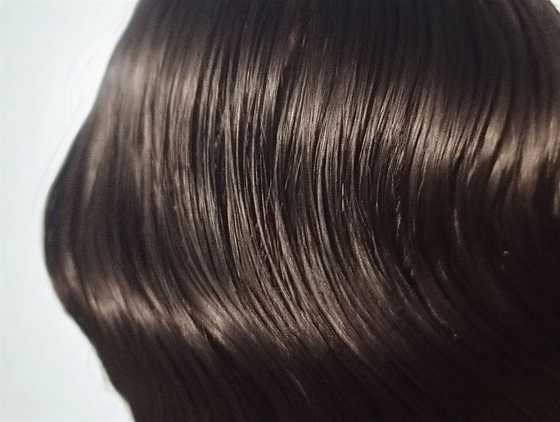
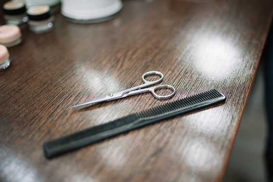
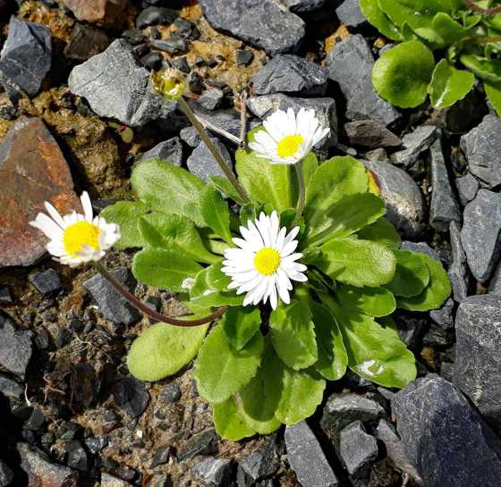
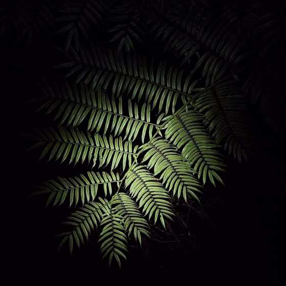

ナチュラルで、やわらかく。
似合うかたちを、扱いやすく。
＆. FEEL hair designroom. / 熊本県玉名市岱明町
About
「ナチュラルで柔らかい髪」を大切に。
お店のInstagramのプロフィールには、スタイリストのタカムラミドリさんが「ナチュラルで柔らかいhair」を大切にしていること、そして「似合わせ」と「扱いやすさ」を重視していることが書かれています。ご予約はInstagramのDMまたはアプリから受け付けているとのことです。
情報源: Instagram @en.____054(プロフィール文)。店名の意味・開業の経緯などは確認できていないため掲載していません。
見出しやキャッチコピーの言い回しは制作側の表現で、お店の公式な文言ではありません。
- ナチュラルつくり込みすぎない、やわらかな質感。
- 似合わせその人らしさに合うかたち。
- 扱いやすさ毎日のお手入れが楽なように。

Mood
やわらかな光と、髪のイメージ





写真はフリー素材のイメージで、お店の実際の様子ではありません。
Voice
口コミ(イメージ例)
イメージ例
「扱いやすいように相談しながら決めてもらえて、朝のセットが楽になりました。」
イメージ例
「やわらかい雰囲気に仕上げてもらいました。自分に合うかたちを一緒に考えてもらえました。」
イメージ例
「ゆっくり話を聞いてもらえて、落ち着いて過ごせました。」
口コミはサイト制作用に作成した創作のイメージ例で、実在のお客様の声ではありません。
写真クレジット
すべてWikimedia Commons掲載のフリー素材(イメージ)です。
- 後ろ姿の黒髪: Alex Neman / CC BY-SA 4.0
- ストレートヘア: Nekoneko774 / CC BY-SA 4.0
- 三つ編み: Pete Bellis / CC0
- ハサミとコーム: Shixart1985 / CC BY 2.0
- カーテンの光: Steinar Engeland / CC0
- 観葉植物: Greg Weaver / CC0
- 白いタオル: Brandon.wiggins / CC BY-SA 3.0
- 木目: Bango Textures / CC0
- 夕空の雲: Thomas Booker / CC0
- シダ: Shyamal / CC0
- 葉: Rob Mitchell / CC0
- 小さな花: Peter de Lange / CC0